비서-1급 (2018-05-13 기출문제)
1과목: 비서실무
1. 다음 중 비서의 업무에 대한 설명으로 적절하지 않은 것은?
- 비서는 상사의 다양한 경영적 잡무를 덜어주며, 사무실의 절차와 업무의 흐름이 능률적이 되도록 조정하고 유지하는 업무를 수행한다.
- 비서의 업무는 조직에서의 상사의 역할과 위치, 상사의 업무 수행방식, 비서에게 업무를 위임하는 정도, 조직의 특성 등에 따라 차이가 있다.
- 상사의 지시를 받아서 주어진 시간 내에 수행해야 하는 비서업무로는 우편물 처리, 전화 및 내방객 응대, 사무기기 및 환경관리 업무 등이 있다.
- 비서는 문서 서식개발, 정보검색 및 자료준비, 업무수행 방법 및 절차개선과 같은 창의적 업무를 수행할 수 있다.
(정답률: 53%)

2. 비서직무를 통한 자기개발에 대한 설명으로 적절하지 않은 것은?
- 직무 경험을 통한 학습은 자기개발에 매우 효과적이다.
- 직무를 통한 학습은 현재의 직무 수행 능력을 향상시킬 수 있을 뿐 아니라 미래에 더 많은 책임을 맡을 수 있는 능력을 개발하는 것을 의미한다.
- 비서는 상사의 의사결정 방법과 업무처리방법을 보면서, 자신이라면 어떻게 처리할 것인가 또 그 결과는 어떻게 달라질 것인가에 대해 여러 각도로 분석하는 능력을 개발할 필요가 있다.
- 비서는 상사에게 배달되는 우편물을 개봉하고, 개인적인 편지나 인사(人事)에 대한 기밀사항을 파악함으로써 업무에 대한 이해를 높이면서 자기개발도 가능하다.
(정답률: 81%)
3. G사의 한국 지사장을 보좌하는 오성숙 비서는 상사와 뉴욕 본사 회장 그리고 런던 지사장과 3자 국제전화회의를 준비 중이다. 이를 위한 업무내용으로 가장 부적절한 것은?
- 회의 참석자들에게 전화회의 개최 시간을 알릴 때 한국 기준 시간임을 알려야 한다.
- 전화회의에 필요한 전화번호, 패스코드(pass code)를 미리 확인해 둔다.
- 상사의 편의를 위하여 회의 시간을 우리 시간 오전 10시로 제안한다.
- 회의에 필요한 자료가 있을 경우 사전에 회의 참석자들에게 메신저나 이메일 등을 이용하여 전달한다.
(정답률: 83%)
4. 전화응대 업무에 대한 설명으로 가장 적절하지 않은 것은?
- 부재중 전화 메모에는 걸려온 시각을 반드시 기록한다.
- 상사 휴대폰 번호를 요청하는 상대방에게는 일단 상대방의 연락처를 받은 후 상사에게 연락을 드려 상사 전화번호를 알려줘도 되는지를 확인한다.
- 상대방이 급한 용무로 외출 중인 상사와의 통화를 원할 경우는 상사의 휴대폰 번호를 알려 주고 직접 연락하실 수 있도록 조치한다.
- 급한 용무로 회의 중인 상사와 통화를 원할 경우 상대방의 소속과 이름, 용건을 메모하여 회의 중인 상사에게 전달한다.
(정답률: 85%)
5. 현재 상사는 해외 출장 중이다. 상사의 동창이라는 분이 방문하여 급한 일이므로 즉시 연락하고 싶다고 한다. 비서는 상사는 출장중이므로 명함을 두고 가시라고 말씀드렸으나 모바일 메신저로 라도 연락하고 싶다고 한다. 비서의 가장 적절한 응대방법은?
- 핸드폰 번호를 몰라도 아이디만 알아도 연락이 되는 모바일 메신저가 있으므로 아이디를 알려드리고 연락드려보라고 한다.
- 모바일 메신저로 연락할 때 시차를 고려하라고 조언 드린다.
- 핸드폰 번호는 규정상 알려드릴 수 없다고 말씀드리고 상사에게 방문객에 관해 보고하지 않아도 된다.
- 상사는 출장 중이므로 용건과 명함을 두고 가시면 상사에게 가능한 빨리 연락드리겠다고 말씀드린다.
(정답률: 82%)
6. 박해정 비서는 내방객 정보 관리 데이터 베이스를 구축하고자 한다. 이 데이터 베이스 항목으로 중요도가 가장 낮은 것을 고르시오.
- 내방객 최초 방문일자와 방문목적
- 상사와의 관계 및 동반 방문자
- 내방객 기호 및 회사에서 드린 기념품
- 내방객이 이용한 교통수단 및 내방객 복장
(정답률: 67%)
7. 김비서는 신입비서가 작성한 보고서에서 오류를 발견하였다. 김비서의 대응 자세로 가장 적절한 것은?
- 김비서가 수정하여 제출 후 추후 신입 비서의 오류 내용을 정리하여 신입비서 교육에 활용할 계획이다.
- 신입 비서를 질책하며 보고서의 문제점을 하나하나 언급한다.
- 신입 비서에게 오류를 알려주고 수정하도록 지시한다.
- 사소한 오류인 경우는 굳이 알리지 않고 김비서가 직접 수정하여 전송한다.
(정답률: 64%)
8. 회사를 사직할 때의 자세로 가장 적절한 것은?
- 충분한 인수인계 기간을 갖기 위하여 최소 한 달의 여유를 두고 사직서를 제출한다.
- 문서정리는 내가 일하기 좋았던 방식으로 정리하고 나만의 업무 노하우를 전수한다.
- 그동안 작성해 둔 거래처 전화번호나 상사 신상명세서 등은 파기하여 보안에 신경 쓴다.
- 사직 후에도 회사에 자주 방문하여 후임의 업무 수행 방식이 잘못된 점을 지적해준다.
(정답률: 80%)
9. 골프장 예약 시 가장 적절하지 않은 것은?
- 예약 전에 동반자 수를 확인한다.
- 티오프 타임(tee-off time)이 06:38a.m이어서 06:30a.m의 오타인 것으로 보여 상사에게 06:30a.m이라고 보고한다.
- 상사가 처음 가는 골프장이라 가는 길을 검색하여 알려드린다.
- 골프장 예약 취소 규정을 확인한다.
(정답률: 83%)
10. 상사는 저녁 8시로 식당 예약을 지시하면서 와인을 가져갈 예정이라고 하였다. 관련 예약업무 후 비서가 상사에게 보고해야 할 필수 사항으로 짝지어진 것을 고르시오.
- last order 시간과 식당에서 제공하는 ‘오늘의 메뉴’
- corkage 가능여부 및 last order 시간
- 테이블 갯수와 corkage 비용
- 식당에서 제공하는 ‘오늘의 메뉴’와 개인이 지참할 수 있는 와인 수
(정답률: 65%)
11. 다음 중 공식적으로 유로화가 통용되지 않는 나라는?
- 프랑스
- 독일
- 영국
- 벨기에
(정답률: 56%)
12. 만찬 행사 시 의전 원칙으로 가장 적절하지 않은 것은?
- 만찬 초청장은 행사 2~3주 전에 발송하는 것이 바람직하다.
- 전화로 참석여부를 물어보고 참석하겠다고 답변한 경우는 일의 효율성을 위하여 굳이 정식 초청장을 보낼 필요는 없다.
- 만찬 행사시 플레이스 카드(place card)는 참석자가 착석하면 치운다.
- 복장은 ‘business casual’이어서 넥타이를 착용하지 않는다.
(정답률: 78%)
13. 다음 중 표기가 잘못된 것을 고르시오.
- 수의계약(隨意契約) - 경쟁이나 입찰에 의하지 않고 상대편을 임의로 선택하여 체결하는 계약
- 갹출(醵出) - 같은 목적을 위하여 여러 사람이 돈을 나누어 냄
- 계인(契印) - 두 장의 문서에 걸쳐서 찍어 서로 관련되어 있음을 증명하는 도장
- 결제(決裁) - 결정할 권한이 있는 상관이 부하가 제출한 안건을 검토하여 허가하거나 승인함
(정답률: 58%)
14. 비서의 사무실 환경 관리에 관한 내용이다. 가장 적절하지 않은 것은?
- 상사 접견실에 있는 난초 화분은 매일 아침 물을 준다.
- 탕비실에 구비된 다양한 차의 유통기한을 눈에 띄게 상자에 적어놓았다.
- 상사 책상 위의 필기구는 확인하여 잘 나오지 않으면 바로 교체한다.
- 기밀 문서 작업이 많은 비서의 컴퓨터 모니터는 화면보호 기가 자주 작동하도록 설정해 둔다.
(정답률: 56%)
15. 사원 김미란 비서는 예성희 과장으로부터 다음과 같은 업무지시를 받았다. 제시된 문장 중 대화의 마지막에 들어갈 표현으로 가장 부적절한 것은?
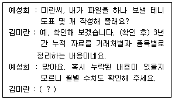
- 네, 알겠습니다. 언제까지 완료할까요?
- 네, 알겠습니다. 혹시 자료 보면서 궁금한 점 있으면 여쭤봐도 될까요?
- 제가 지금 이성길 대리 업무를 지원하고 있는데 이 대리님 승인 없이는 수행할 수 없습니다.
- 아마 전체 내용 검토하고 도표 작성하는데 2시간 정도 소요 될 것 같습니다.
(정답률: 77%)
16. 다음 중 외부인 출입 관리에 대한 비서의 태도로 가장 적절하지 않은 것은?
- 내방객은 허가된 지역에 한하여 출입하고 필요하다면 방문증을 대여, 패용할 수 있도록 안내한다.
- 방문객이 시설의 견학을 요청하여 상사의 동의하에 허용하였다.
- 건물 입장 시 신체 및 휴대품의 보안검사가 있음을 상대방에게 미리 알린다.
- 주요 인사가 우리 회사를 방문할 경우 주차관리실에 차량번호를 등록해둔다.
(정답률: 49%)
17. 전자세금 계산서란 인터넷 등 전자적인 방법으로 세금 계산서를 작성 및 발급하여 그 내역을 국세청에 전송하는 것을 말한다. 전자세금 계산서에 대한 설명으로 가장 적절하지 않은 것은?
- 전자세금 계산서는 매출자, 매입자 모두 조회가 가능하다.
- 매출자가 ERP 시스템을 이용하여 세금계산서를 발급한 경우에 합계표 조회는 당일 바로 가능하다.
- 전자세금 계산서에 있는 공급자의 사업자 등록번호가 정확한지 확인한다.
- 전자세금 계산서를 발급하면 세금 계산서 합계표 명세 제출 및 세금 계산서 보관 의무가 면제되어 편리하다.
(정답률: 49%)
18. 비서의 경조사 업무 처리 방식 중 가장 적절하지 않은 것은?
- 매일 신문의 경조사란을 읽어보고 상사와 관련된 인사의 경조사가 있는지를 파악하여야 한다.
- 회사의 동아리 활동에 참여하여 얻게 되는 경조사 소식도 사실 확인 후 처리한다.
- 경조사에 화환을 보낼 때도 원하는 품질로 배달되었는지 확인한다.
- 정기적으로 상사의 지인들에게 문자나 전화를 통해 바쁜상사를 대신하여 최근에 경조사가 있는지 확인한다.
(정답률: 66%)
19. 의전 원칙 5R을 설명한 것으로 적절한 것을 모두 고른 것은?
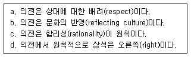
- a, b, c, d
- a, b, d
- b, c, d
- a, b, c
(정답률: 54%)
20. 김 비서는 주주총회와 이사회에 관한 업무교육을 받고 있다. 다음 중 보기에서 적절한 것을 모두 고른 것은?
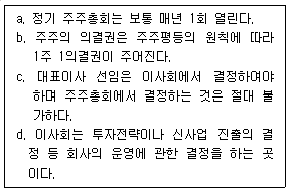
- a, b, c, d
- b, c, d
- a, c, d
- a, b, d
(정답률: 59%)
2과목: 경영일반
21. 최근 기업윤리가 경쟁력의 원천으로 떠오르면서 윤리경영을 실천하는 기업이 증가하고 있다. 다음 중 기업이 지켜야 할 주요 윤리 원칙에 대한 설명으로 가장 바람직하지 않은 것은?
- 가격 결정, 허가, 판매권 등 모든 활동에 대해 협력업체와 정보를 공유하고 계약에 따라 적시에 대금을 지급한다.
- 주주 투자가의 요구, 제언, 공식적인 결정을 존중한다.
- 지역문화의 보존을 존중하고 교육, 문화에 자선을 기부한다.
- 종업원 삶의 환경 개선을 위해 최소한 종업원의 생계비를 감당할 수 있는 수준에서 평균임금수준을 결정한다.
(정답률: 46%)
22. (A)는 계약에 의한 해외시장진출방식에 대한 설명이다. 다음 보기 중 ( A )에 대한 내용으로 가장 적절한 것은?
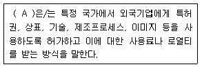
- 상대적으로 적은 비용으로 해외 진출이 가능하므로 해외 직접투자에 비해 대체로 수익성이 높은 편이다.
- 프랜차이징방식으로 마케팅프로그램에 대한 교육이나 경영 노하우 등을 기업에게 직접 제공해 줌으로써 표준화된 마케팅 활동을 수행할 수 있다.
- 현지국에 고정자본을 투자함으로써 정치적 위험에 노출될 수 있다는 단점이 있다.
- 수입장벽을 우회하는 전략적 특징이 있어서 진출예정국에 수출이나 직접투자에 대한 무역장벽이 존재할 경우에 유리하다.
(정답률: 42%)
23. 다음은 경영환경요인에 대한 설명이다. 이 중 가장 적절하지 않은 설명은?
- 기업에 직접적인 영향을 미치느냐의 여부에 따라 직접환경 요인과 간접환경요인으로 분류할 수 있다.
- 내부환경요인은 주주, 종업원, 경영자, 경쟁자 등이 포함된다.
- 소비자, 금융기관, 정부 등의 요인은 외부환경요인 중 직접 환경에 포함된다.
- 기술, 정치, 법률, 사회문화요인은 외부환경요인이다.
(정답률: 60%)
24. 다음은 어떤 기업형태를 설명한 것인지 가장 가까운 보기를 고르시오.
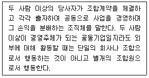
- 합명회사
- 합자회사
- 유한회사
- 조합기업
(정답률: 50%)
25. 다음은 기업의 인수합병을 설명한 것이다. 이 중 거리가 가장 먼 것은 무엇인가?
- 흡수합병이란 한 기업이 다른 기업을 완전히 흡수하는 것을 의미한다.
- 신설합병은 통합된 두 기업이 완전히 소멸되어 제3의 기업이 탄생하는 것이다.
- 합병은 피인수 기업을 그대로 존속시키면서 경영권을 행사하는 방법을 의미한다.
- 두 회사를 통합하여 하나의 회사로 변신하는 것을 합병이라고 한다.
(정답률: 60%)
26. 다음은 주식회사에 대한 설명이다. 이 중 가장 적절하지 않은 것은 무엇인가?
- 현대사회에서 가장 대표적인 기업으로 모두 유한책임사원으로 구성되는 자본적 공동기업이다.
- 자본을 모두 증권화하고 있으며, 이러한 증권화제도를 의제 자본이라고도 한다.
- 주식회사는 소유와 경영이 분리될 수 있으며, 주주가 많아지고 주식분산이 고도화될수록 투자자들은 경영에 대한 관심보다 주로 자본이득에 관심을 갖게 된다.
- 주식회사의 사원은 주로 출자자와 경영자로 분류되며, 자신의 투자액, 즉 주식매입가격 한도 내에서만 책임을 지는 엄격한 유한 책임제도를 갖는다.
(정답률: 33%)
27. 다음 중 중소기업과 대기업의 비교에 대한 설명으로 가장 적절하지 않은 것은?
- 대기업은 경기변동에 있어서 중소기업보다 상대적으로 탄력적이고 신축적이다.
- 대기업은 소품종 대량생산에 의하여 시장수요에 대응하고 중소기업은 주문에 의한 다품종 소량생산에 의존하는 경향이 있다.
- 대기업과 비교해서 중소기업은 저생산성과 저자본비율이라는 특성을 가지고 있다.
- 중소기업의 지역사회관계는 일반적으로 대기업보다 밀접 하며 지역문화 형성에 큰 역할을 담당한다.
(정답률: 50%)
28. 다음은 경쟁가치모형에 따른 조직문화의 유형을 나타낸 그림이다. 다음 중 A~D의 조직문화를 가장 맞게 표현한 것으로 짝지어진 것은?
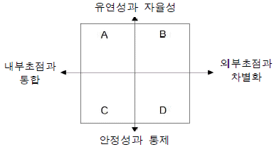
- 혁신문화(A) - 시장문화(B)
- 관계문화(A) - 혁신문화(B)
- 시장문화(C) - 관계문화(D)
- 위계문화(C) - 혁신문화(D)
(정답률: 61%)
29. 다음의 대리인 문제에 대한 설명 중 가장 거리가 먼 것은?
- 대리인 문제는 주체와 대리인의 이해관계가 일치하지 않아 생기는 문제를 의미한다.
- 주주는 대리인이 주주들을 위해 일하고 있는지 감시해야하는 데 이때 소요되는 비용을 확증비용(bonding cost)이라고 한다.
- 전문경영자가 기업을 위한 최적의 의사결정을 하지 않음으로써 발생하는 기업가치손실비용을 잔여손실(residual loss)이라고 한다.
- 전문경영자는 주주의 이익보다 개인의 이익을 우선할 때 도덕적해이(moral hazard)가 생길 수 있다.
(정답률: 48%)
30. 다음 경영의 기능 중에서 조직화(organizing)와 관련된 내용으로 가장 적합한 것은?
- 조직이 달성해야 할 목표를 설정한다.
- 조직구성원을 동기부여한다.
- 성과를 측정하고 피드백을 제공한다.
- 수행할 업무를 분할하고 필요한 자원을 배분한다.
(정답률: 55%)
31. 다음의 의사소통에 관한 설명 중 가장 적절하지 않은 것은?
- 의사소통이란 정보와 구성원들의 태도가 서로 교환되는 과정이며, 이때 정보는 전달 뿐 아니라 완전히 이해되는 것을 의미한다.
- 의사소통의 목적은 통제, 지침, 동기부여, 문제해결, 정보전달 등이 포함된다.
- 직무지시, 작업절차에 대한 정보제공, 부하의 업적에 대한 피드백 등은 하향식 의사소통에 포함된다.
- 동일계층의 사람들 간의 의사전달, 부하들의 피드백, 새로운 아이디어 제안 등은 수평식 의사소통에 포함된다.
(정답률: 42%)
32. 다음 중 변혁적 리더십에 관한 설명으로 가장 적절하지 않은 것은?
- 변혁적 리더는 부하 개개인의 감정과 관심, 그리고 욕구를 존중함으로써 동기유발 시킨다.
- 변혁적 리더는 부하들에게 비전을 제시하고 비전달성을 위해 함께 협력할 것을 호소한다.
- 변혁적 리더십의 구성요인은 조건적 보상과 예외에 의한 관리이다.
- 변혁적 리더는 부하들에게 자신의 이익을 초월하여 조직의 이익을 위해 관심을 가지고 공헌하도록 고무시킨다.
(정답률: 45%)
33. 다음의 마케팅에 관한 설명 중 가장 적절하지 않은 것은?
- 선행적 마케팅활동은 마케팅조사활동, 마케팅계획활동 등을 말한다.
- 관계 마케팅은 충성도를 증진시키기위해 멤버쉽카드 등을 활용하기도 한다.
- 자사의 상품에 대한 구매를 의도적으로 줄이는 마케팅활동을 심비오틱마케팅이라고한다.
- 동시화마케팅은 제품 및 서비스의 공급능력에 맞추어 수요 발생시기를 조정 또는 변경한다.
(정답률: 67%)
34. 다음의 사례에서 제품의 수명주기(product life cycle)중 (A)는 어떤 시기에 해당되는 것인지 보기에서 고르시오.
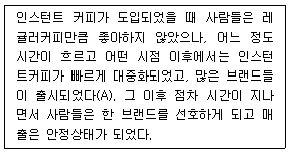
- 성숙기
- 성장기
- 도입기
- 쇠퇴기
(정답률: 56%)
35. 다음의 직무관리내용에 대한 설명 중 가장 거리가 먼 것은?
- 직무분석은 직무를 수행함에 있어 요구되는 지식, 숙련도, 능력 및 책임과 같은 직무상 여러요건을 결정하는 과정이다.
- 직무분석을 실시하는 데는 직무분석의 방법, 직무분석의 담당자, 직무에 대한 사실 등의 연구가 필요하다.
- 직무분석에 대한 결과는 직무기술서와 직무명세서에 서술된다.
- 직무기술서는 직무분석결과에 따라 직무에 요구되는 개인적 요건에 중점을 두고 정리한 문서이다.
(정답률: 60%)
36. 다음 중 전자상거래에 대한 설명으로 가장 적절하지 않은 것은?
- 전자상거래는 기업, 정부기관과 같은 독립된 조직 간 또는 개인 간에 다양한 전자적 매체를 이용하여 상품이나 용역을 교환하는 것이다.
- 전자상거래는 인터넷의 등장과 함께 발전하고 있는데, 그 이유 중 하나는 인터넷 전자상거래가 기존의 상거래에 비해 비교적 많은 마케팅 이익 및 판매이익을 주고 있기 때문이다.
- 전자상거래는 도매상과 소매상을 거치지 않고 인터넷 등을 통해 직접 소비자에게 전달되기 때문에 물류비의 절감을 통해 경쟁력을 높일 수 있다.
- 전자상거래는 소비자의 의사와는 상관없이 기업의 일방적인 마케팅 활동을 통해 이루어진다.
(정답률: 70%)
37. 다음의 투자안의 경제성 분석기법에 관한 설명으로 가장 옳지 않은 것은?
- 회수기간법은 회수기간이후의 현금흐름은 고려하지 않는다.
- 회계적이익률법은 화폐의 시간적 가치를 고려한다.
- 순현재가치법은 내용연수동안의 모든 현금흐름을 고려한다.
- 내부수익률법은 투자기간동안 자본비용이 변하는 경우에는 적용하기 어렵다.
(정답률: 29%)
38. 아래의 보기에서 나타난 (A)에 해당하는 용어로 가장 적절하지 않은 것은?
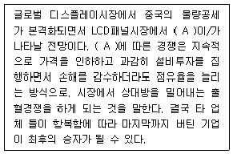
- 치킨게임
- 죄수의딜레마
- 제로섬게임
- 세명의 총잡이게임
(정답률: 48%)
39. 최근 대두되고 있는 4차 산업혁명에 대한 설명 중 가장 거리가 먼 것은?
- 2015년 세계경제포럼에서 언급되었으며, 기계중심 기반의 새로운 산업시대를 대표하는 용어이다.
- 3차산업혁명(정보혁명)에서 한 단계 더 진화한 혁명으로 일컬어진다.
- AI, 사물인터넷, 클라우드 컴퓨팅, 빅데이터 등 지능정보 기술과 기존산업과의 결합이 가능하다.
- 초연결, 초지능을 특징으로 하기에 기존산업혁명에 비해 더 넓은 범위에 더 빠른 속도로 큰 영향을 미친다.
(정답률: 66%)
40. 다음은 무엇을 설명하는 용어인지, 가장 가까운 보기를 고르시오.
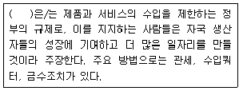
- 자국우선주의
- 역외아웃소싱
- 보호무역주의
- 경제성장주의
(정답률: 49%)
3과목: 사무영어
41. Which of the followings is most appropriate for the blank?
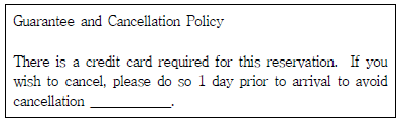
- penalties
- fees
- payment
- fares
(정답률: 38%)
42. Who is Ms. Chillingworth MOST likely to be?
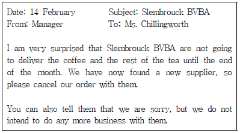
- a purchasing & sales supervisor
- HR manager
- a PR manager
- a production manager
(정답률: 51%)
43. Choose one that does not correctly explain each other.
- Voice mail : a system where people leave recorded telephone messages
- Staple : a metal object pressed through papers to hold them together
- Tape : a sticky material that keeps objects together
- Atlas : a room or building where books are kept
(정답률: 60%)
44. Choose the sentence which does not have a grammatical error.
- I will be out of town on a business trip July 5 through 12.
- This is to conform that Ms. Dalton's hotel booking has cancelled.
- FYI, I have been forwarded the below email and attached.
- If you'll have any queries regarding this new health benefit program, please call me at Ext. 1004.
(정답률: 23%)
45. Please put the sentences in order.
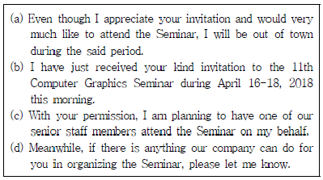
- (b) - (a) - (c) - (d)
- (c) - (a) - (b) - (d)
- (c) - (b) - (a) - (d)
- (a) - (c) - (b) - (d)
(정답률: 52%)
46. Which English translation is grammatically INCORRECT?
- 참고가 되는 통계를 첨부합니다. Statistics are attached for reference.
- 이 공장 기계는 한국제입니다. This machine tool was made in Korea.
- 저희 최신 공장은 공업 단지에 있습니다. Our most new plant is located on the industrious zone.
- 재고는 계절에 따라 오락가락합니다. The inventory fluctuates up and down depending on the season.
(정답률: 36%)
47. Which of the following is the most appropriate expression for the blanks ⓐ, ⓑ, and ⓒ.(47번 공통지문 문제)
- ⓐ welcome, ⓑ prepared, ⓒ obtain
- ⓐ hospitality, ⓑ arranged, ⓒ owe
- ⓐ entertain, ⓑ booked, ⓒ deserve
- ⓐ reception, ⓑ provided, ⓒ receive
(정답률: 40%)
48. Belows are sets of English sentence translated into Korean. Choose one which does not match correctly each other.
- You shouldn’t hurry through a business report. → 사업 보고서를 대충대충 작성해서는 안 됩니다.
- We’re about a month behind schedule. → 예정보다 한 달 정도 빨리 끝날 것 같습니다.
- I think we need to wrap it up for today. → 오늘은 이만 해야겠네요.
- Refer to the quarterly report for the last year. → 작년 분기별 보고서를 참조하세요.
(정답률: 58%)
49. According to the following, which is MOST proper?
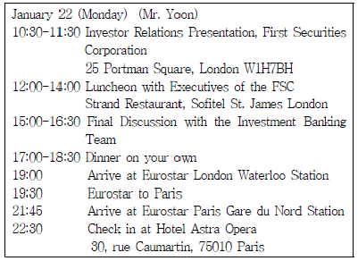
- This is the Europe sightseeing trip itinerary for Mr. Yoon.
- Mr. Yoon will sleep in London on January 22.
- Dinner is important for Mr. Yoon to discuss the current issues with others.
- Mr. Yoon has dinner in London.
(정답률: 53%)
50. According to the followings, which is true?
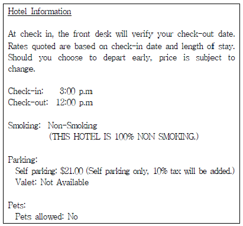
- If you check-out the hotel early in the morning, the room charge can be changed.
- Dogs & pets are allowed at the hotel.
- Valet parking service is available for the hotel guests.
- You can smoke at the hotel lobby.
(정답률: 63%)
51. Which of the following should you NOT do when transferring a call?
- Tell the caller to whom he is being transferred.
- Be polite and professional.
- Disconnect the caller.
- Ask the caller for permission before you make the transfer.
(정답률: 53%)
52. According to the following dialogue, which is not true?
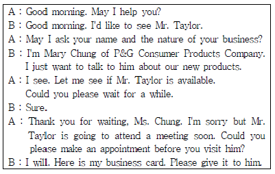
- Ms. Chung belongs to P&G Consumer Products Company.
- Mr. Taylor can't meet Ms. Chung because of his schedule.
- Ms. Chung didn't want to introduce herself to Mr. Taylor.
- Ms. Chung visited Mr. Taylor's office without appointment.
(정답률: 62%)
53. Fill in the blanks of the phone call discourse with the best word(s).
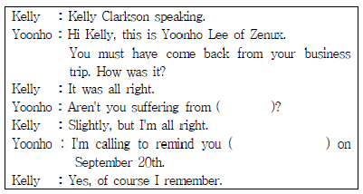
- phone calls - to our meeting
- the trip - by our meeting
- jetlag - of our meeting
- jet plane - for our meeting
(정답률: 46%)
54. Which of the following is the most appropriate expression for the blank?
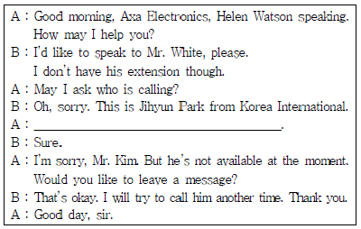
- I'll put you through to Mr. White.
- His extension number is 1234.
- Just a moment, please. I will see if he’s in.
- The lines are crossed. Please call me again.
(정답률: 62%)
55. Choose one which is not true to the given text.
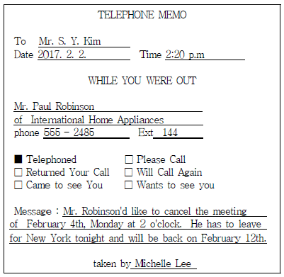
- Mr. Paul Robinson left this message to Ms. Michelle Lee.
- Mr. Paul Robinson called Mr. Kim to cancel the meeting of February 4th.
- Ms. Michelle Lee is working for International Home Appliances.
- This message should be given to Mr. S. Y. Kim as soon as possible.
(정답률: 54%)
56. This is Mr. M. Lee's itinerary. Which one is true?
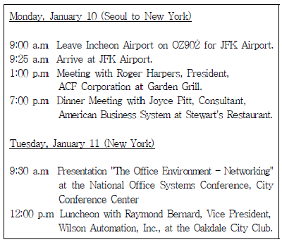
- Mr. M. Lee is going to fly to USA on OZ902.
- Mr. M. Lee will make a presentation at the City Conference Center after lunch.
- Mr. M. Lee will have a luncheon meeting at Garden Grill on January 11th.
- Mr. M. Lee will arrive at JFK airport at 9:25 a.m. on January 11th Seoul time.
(정답률: 50%)
57. Read the below conversations. Which of the following DOES NOT fit the blank?
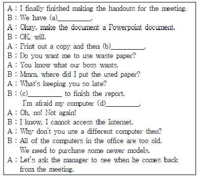
- (a) only 20 minutes to go
- (b) make ten copies of it
- (c) My computer is too slow
- (d) infects a computer virus
(정답률: 32%)
58. According to the following conversation, which one is not true?
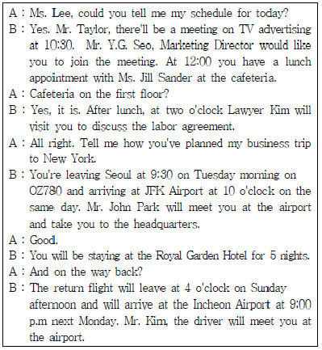
- Mr. Taylor is going to be on a business trip to New York.
- Mr. Taylor has a lunch appointment with Ms. Jill Sander at the cafeteria on the first floor today.
- Mr. Taylor will fly to New York on OZ780 on Tuesday morning.
- Mr. John Park will take you to the Royal Garden Hotel after you arrive at the JFK Airport.
(정답률: 56%)
59. According to the followings, which one is not true?
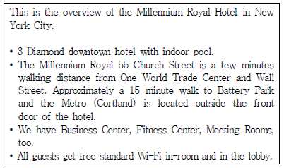
- You can use Wi-Fi anywhere in the hotel free of charge.
- The hotel is located close to the Wall Street.
- The hotel is located in the downtown of New York City.
- There is a Metro station near the hotel.
(정답률: 43%)
4과목: 사무정보관리
60. 다음 중 문서의 발신기관과 관련된 내용이 가장 잘못된 것은?
- 대외문서의 경우 기획부에서 작성한 문서라 할지라도 행정기관 또는 행정기관의 장의 명의로 발송한다.
- 발신기관 정보는 문서의 내용에 관하여 의문사항이 있을 때 질의하거나 당해 업무에 관하여 협의할 때 용이하게 활용할 수 있는 중요한 정보이므로 반드시 기록한다.
- 발신기관 주소는 층수와 호수까지 기재한다.
- 전자우편 주소는 최종결재권자의 행정기관 공식 전자우편 주소를 기재한다.
(정답률: 32%)
61. 다음 중 기안문의 수신 표시가 가장 부적절한 것은?
- 수신자 청양군수(기획과장)
- 수신자 청양군
- 수신자 수신자 참조
- 수신자 가47(예산업무 담당과장)
(정답률: 47%)
62. 사단법인의 팀비서로 일하고 있는 전비서가 문서의 수발신 업무를 아래와 같이 하고 있다. 다음 보기 중 올바르지 않은 것끼리 묶은 것을 고르시오.
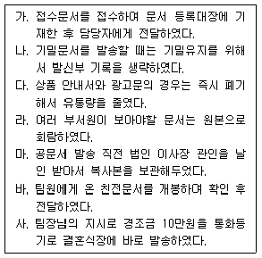
- 가, 나, 다, 사
- 나, 다, 라, 바
- 나, 다, 마, 사
- 나, 라, 마, 사
(정답률: 60%)
63. 다음은 상공주식회사의 비용부문에 관한 위임전결규정의 일부 표이다. 이 규정에 맞게 가장 효율적이고 적절하게 문서 결재가 처리된 것을 고르시오.
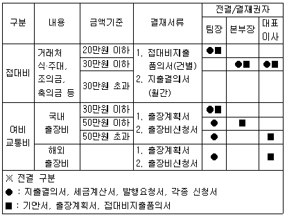
- 20만원의 국내 출장비가 필요한 출장계획서를 팀장이 부재중이여서 본부장이 대결하였다.
- 대표이사 비서실에서는 산학협력기관의 한국대 김명수 교수의 아들 결혼식 축의금 10만원 처리를 위하여 대표이사에게 접대비 지출품의서를 결재받았다.
- 본부장의 해외출장 계획서를 결재권자가 해외출장중이여서 팀장이 대결하였다.
- 본부장의 제주 포럼 참가 출장비 100만원 처리를 위한 출장비 신청서를 팀장이 전결하였다.
(정답률: 48%)
64. 한국상공(주)의 대표이사 비서인 이나영씨는 거래처 대표이사가 새로 취임하여 축하장 초안을 작성하고 있다. 다음 축하장에서 밑줄 친 부분의 맞춤법이 바르지 않은 것끼리 묶인 것은?
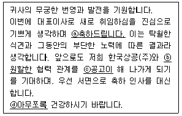
- ⓐ, ⓑ
- ⓑ, ⓒ
- ⓑ, ⓓ
- ⓒ, ⓓ
(정답률: 61%)
65. 교회비서로 근무하는 김비서는 교회에서 생산, 거래되는 문서를 파일링하기 위해 다음과 같은 방법을 사용하였다. 먼저 문서는 1차로 ‘예배, 법적재산, 교구재정, 인사기록, 각종서신, 목회자료, 출판물’로 분류한다. 김비서가 사용한 1차 문서분류 방법은 무엇인가?
- 주제별 파일링(subject filing)
- 번호순 파일링(numeric filing)
- 수문자 파일링(alphanumeric filing)
- 알파벳순 파일링(alphabetic filing)
(정답률: 71%)
66. 다음 중 감사장을 적절하게 작성하지 않은 비서를 고르시오.
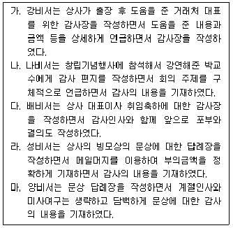
- 나비서, 성비서
- 배비서, 양비서
- 강비서, 나비서
- 강비서, 성비서
(정답률: 60%)
67. 아래 보기에 스마트폰 애플리케이션이 2개씩 짝지어져 있다. 2개의 사용목적이 서로 다른 것끼리 짝지어진 것은?
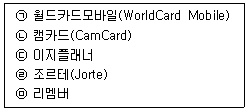
- ㉠, ㉡
- ㉠, ㉣
- ㉡, ㉤
- ㉢, ㉣
(정답률: 40%)
68. 다음 중 기업이 존재하는 한 영구 보존해야 하는 종류의 문서가 아닌 것은?
- 주주총회 회의록
- 정관
- 특허 관련 서류
- 재무제표
(정답률: 45%)
69. 일정관리파일을 이용해 온라인으로 일정을 관리하는 방법이 가장 잘못된 비서는?
- 고비서는 작성된 부서 일정을 인트라넷을 통해 공유했다.
- 김비서는 지속적으로 일정 관리 파일을 업데이트 했다.
- 최비서는 한글 프로그램으로 만든 일정 파일의 파일명을 구체적인 일정과 날짜를 기입하여 관리한다.
- 이비서는 일정 관리 파일을 기간별로 정리하여 파일링하고 일>주간>월>연간 단위 순서로 하위 폴더를 생성한다.
(정답률: 45%)
70. 엑세스를 활용한 명함 데이터베이스 관리의 특징으로 가장 잘못된 것은?
- 엑셀보다 다양한 데이터 형식인 OLE개체, 일련번호, 첨부 파일 등을 지원한다.
- 엑셀에서 입력한 데이터파일을 엑세스로 불러와서 활용할 수 있다.
- 엑셀로 데이터를 내보내서 안내장, 편지 라벨 작업 등을 할 수 있다.
- 엑세스에서는 편지 병합 기능을 이용한 편지 작성, 라벨 작업 등을 사용할 수 없다.
(정답률: 60%)
71. 다음 기사를 읽고 유추하기에 가장 부적절한 것은?
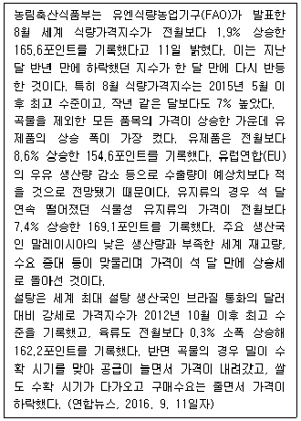
- 2016년 8월 세계식량가격지수가 1년 3개월만에 역대 최고치를 갱신했다.
- 설탕은 브라질 통화의 강세로 인해서 2012년 11월보다 가격이 높아졌다.
- 2016년 8월 기준으로 곡물 가격은 하락하였으나, 오히려 식량가격지수는 상승한 셈이다.
- 유럽연합의 우유 수출량 감소 전망으로 인해 유제품 가격 상승폭이 커졌다.
(정답률: 36%)
72. 다음 그래프에 대한 설명이 가장 올바른 것은?
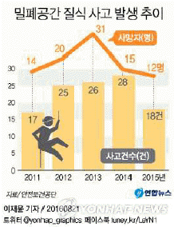
- 사고건수가 많으면 사망자수도 비례해서 많아진다.
- 이 그래프는 혼합형 그래프로서 이중축 중 한 개 축이 보이지 않게 설정되었다.
- 2014년에는 밀폐공간 질식사고가 나면 전원 사망하였다.
- 2013년에는 전년대비 사고건수는 감소했으나, 사망자수가 늘어났다.
(정답률: 66%)
73. 광고대행사인 상공기획에 근무하는 정은숙 비서는 상사의 광고 수주를 위한 프리젠테이션 자료를 작성하고 있다. 이 중 가장 바람직하지 못한 것은?
- 우리회사의 광고 대행 연간실적 추이를 보여주기 위하여 꺾은선 그래프를 이용한 차트를 포함하였다.
- 우리회사에서 전에 제작한 광고 중 관련된 분야의 히트친 광고 동영상을 서두에 보여주면서 시선을 끌었다.
- 시선을 지속적으로 끌기 위해서 매 슬라이드마다 화려한 화면전환효과와 현란한 애니메이션기능을 활용하였다.
- 광고주가 요청한 사항을 어떻게 처리할 것인지를 명쾌하게 전달 할 수 있도록 도식화하였다.
(정답률: 70%)
74. 다음 중 컴퓨터 바이러스 랜섬웨어에 대한 설명이 가장 적절하지 않은 것은?
- 랜섬웨어는 이메일, 웹사이트, P2P 서비스 등을 통해 주로 퍼진다.
- 랜섬웨어에 걸렸을 경우 컴퓨터 포맷은 가능하나 파일을 열거나 복구하기가 힘들다.
- 랜섬웨어 예방법으로는 컴퓨터를 켜기 전에 랜선을 뽑아두거나 와이파이를 꺼두는 방법이 효과적이다.
- 랜섬웨어 예방을 위해서는 랜섬웨어가 생기기 전의 오래된 윈도우즈가 효과적이므로 오래된 운영체계로 변경하도록 한다.
(정답률: 65%)
75. 다음 보기와 같은 비서의 행동 중에서 가장 적절하지 않은 것으로 묶인 것은?
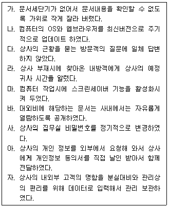
- 다, 라
- 다, 바
- 다, 자
- 다, 라, 바, 자
(정답률: 54%)
76. 다음 중 클라우드서비스에 대한 설명으로 가장 적절하지 않은 것은?
- 클라우드서비스의 종류는 Dropbox, OneDrive, 구글드라이브 등이 있다.
- 저장할 수 있는 공간은 종류에 따라 다르게 제공한다.
- 동영상, 사진, 문서 등 파일의 형태를 가리지 않고 저장이 가능하다.
- 언제 어디서든 인터넷이 가능하지 않아도 저장한 파일을 불러올 수 있다.
(정답률: 65%)
77. 다음은 기업에서 발생한 컴퓨터 범죄의 예이다. 이 사례에 해당하는 컴퓨터 범죄는 무엇인가?
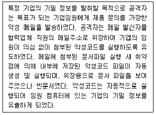
- 스파이 웨어
- 하이재킹
- 스피어 피싱
- 디도스 공격
(정답률: 52%)
78. 김 비서는 신제품 런칭을 위한 상사의 프레젠테이션을 준비하고 있다. 다음 업무를 처리하기 위해 필요한 사무기기가 순서대로 나열된 것은?
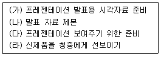
- (가) 파워포인트 - (나) 열제본기 - (다) OHP - (라) 팩시밀리
- (가) 키노트 - (나) 인쇄기 - (다) 실물환등기 - (라) 프로젝터
- (가) 프레지(Prezi) - (나) 문서재단기 - (다) 빔프로젝터 – (라) 실물화상기
- (가) 프레지(Prezi) - (나) 링제본기 - (다) LCD프로젝터 - (라) 실물화상기
(정답률: 44%)
79. IT 관련 회사에 다니고 있는 황비서는 아래의 해외 거래처와 주고받은 문서 정리를 위하여 알파벳순으로 파일링을 하고 있다. 이때 각 폴더의 순서가 가장 올바른 것은?
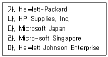
- 마 – 가 – 나 – 라 - 다
- 나 – 마 – 가 – 라 - 다
- 마 – 가 – 나 – 다 - 라
- 가 – 나 – 마 – 다 - 라
(정답률: 59%)